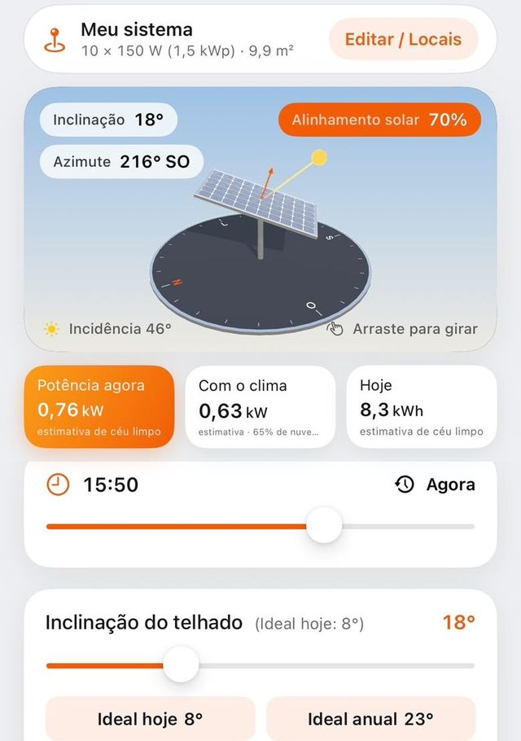
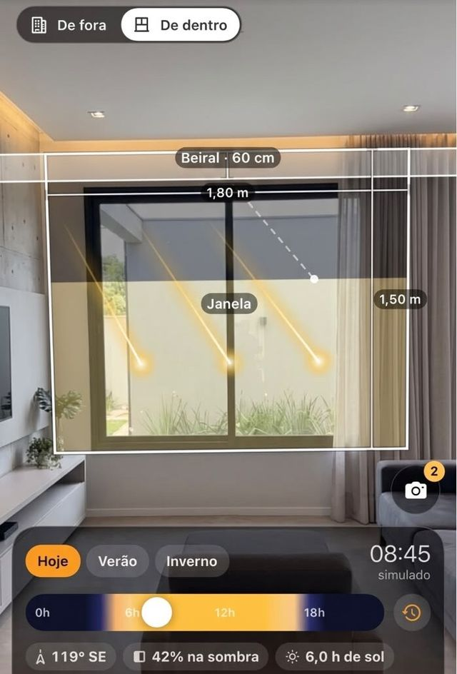
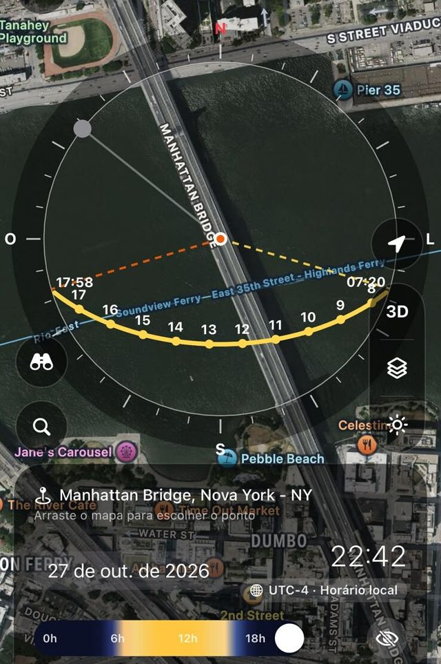
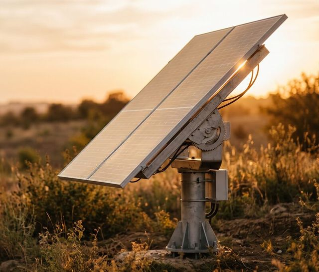
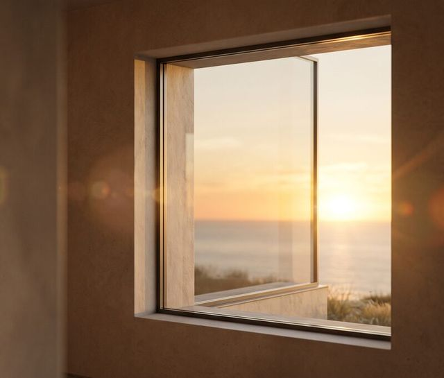
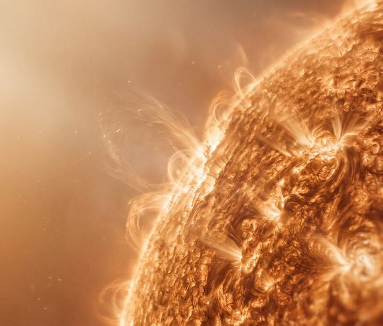
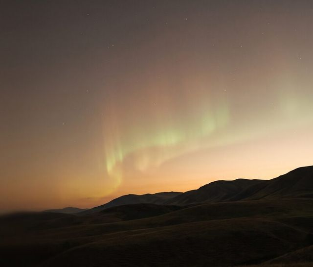

Bússola Solar
A trajetória do sol sobre o mapa
Escolha qualquer ponto e qualquer data: o caminho do sol aparece no mapa de satélite, em 2D ou em 3D, com nascer, pôr, meio-dia solar e os solstícios, no fuso do local.
Trajetória do sol, sombras, estimativa de energia solar e estudo de insolação de fachadas no seu iPhone, com dados da NOAA, da NASA e do Apple Weather.



Do primeiro rabisco do projeto à foto no fim de tarde: o mesmo sol, calculado para o lugar e a data que você escolher.
Insolação de fachadas, beirais e orientação dos cômodos, com estudo bioclimático em PDF para o cliente.
Inclinação e orientação ideais das placas, geração estimada e dimensionamento pela conta de luz.
Veja onde bate sol em cada hora e estação antes de comprar, construir ou vender.
Golden hour, blue hour, o sol e a lua na câmera, índice Kp e chance de aurora.
Contas feitas no seu iPhone, com as equações solares da NOAA.
Escolha qualquer ponto e qualquer data: o caminho do sol aparece no mapa de satélite, em 2D ou em 3D, com nascer, pôr, meio-dia solar e os solstícios, no fuso do local.
Aponte o iPhone para a fachada: o app mede a orientação dela e mostra quanto da janela fica na sombra do beiral no verão e no inverno. Notas por cômodo no mapa e relatório bioclimático em PDF.
Veja a potência agora, com céu limpo e com as nuvens do Apple Weather, a energia do dia e a inclinação ideal. Cada número estimado vem marcado como estimativa, com a fonte.
Timer Solar, Índice Kp e Fluxo Solar são gratuitos para todos.
O caminho do sol, os solstícios e a lua desenhados sobre a imagem da câmera.
A sombra de muros, casas e árvores em escala no mapa, hora a hora, com ficha em PDF.

Meça a inclinação do telhado com o iPhone e compare com o ângulo ideal do dia e do ano.

Nascer, pôr, golden hour e blue hour do local escolhido, com a cúpula 3D do céu.

Raios X ao vivo dos satélites GOES, erupções solares e o fluxo de rádio F10.7, da NOAA.

Atividade geomagnética observada e prevista, e até onde a aurora pode aparecer.
Nada inventado: quando um valor é estimativa, o app diz que é estimativa e de onde ele vem.
Posição do sol pelas equações solares da NOAA e clima espacial do SWPC.
Climatologia de 25 anos (2001–2025): irradiação, temperatura, umidade e vento.
Clima e cobertura de nuvens hora a hora.
Modelo de céu limpo para a geração estimada das placas.
Use o essencial sem pagar nada. Assine o SunArch Pro quando precisar de qualquer data, qualquer lugar e dos relatórios.
Assinatura semanal ou mensal, com teste grátis de 3 dias para novos assinantes. Cancele quando quiser nos ajustes da sua Conta Apple.
As contas são feitas no seu iPhone e os seus locais solares ficam no seu iCloud privado. Nós nunca recebemos a sua localização.